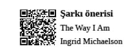

Executive Assistant Profesyonelleri
Executive hayatın dinamik akışını yöneten
profesyoneller
Executive Assistant
Executive assistant, üst düzey profesyonellerin zihinlerinden geçenleri, geçmek üzere olanları, geçtikten sonra oluşacak tehdit ve fırsatları okuyan, anlamlandıran ve ilgili aksiyonları ivedi alan profesyonel yaşam destek ünitesidir.